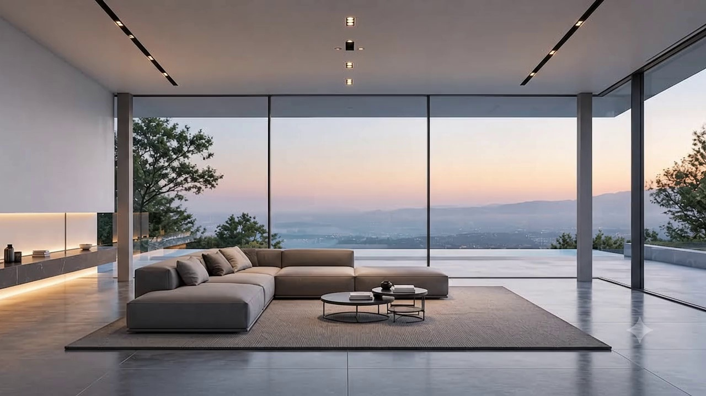

Interior Architecture · London
Spaces that
hold memory.
We design homes around light, material and the quiet intelligence of restraint.
We design homes around light, material and the quiet intelligence of restraint.

Material / Light / Atmosphere
Light changes everything.

“Light changes everything.”
Material, proportion and natural light shape how a space is remembered. We design the light in a room before we design anything that sits inside it.
End-to-end management from concept development through to contractor procurement and on-site construction supervision.
Micro-engineered interior spaces with bespoke fluted panelling, concealed acoustic dampening, and custom marble wet rooms.
Custom commissions fabricated in collaboration with master stone masons, bronze foundries, and heritage joiners in the UK and Italy.
“Luma House understood exactly what we didn’t know we wanted.”
We accept a strictly limited number of private residential commissions each year to ensure rigorous detailing and personal director oversight.